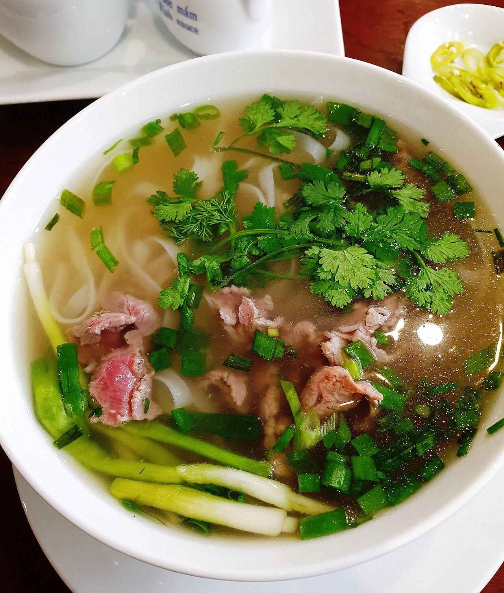

Pho

Description
A traditional pho recipe. Pho is a type of soup from Vietnam containing bone broth, rice noodles, and thin cuts of meat. Taken from the allrecipes website.
Ingredients
- 4 pounds beef soup bones (shank and knee)
- 1 medium onion, unpeeled and cut in half
- 5 slices fresh ginger
- 1 tablespoon salt
- 2 pods star anise
- 2 and 1/2 tablespoons fish sauce
- 4 quarts water
- 1 (8 ounce) package dried rice noodles
- 1 and 1/2 pounds beef top sirloin, thinly sliced
- 1/2 cup chopped cilantro
- 1 tablespoon chopped green onion
- 1 and 1/2 cups bean sprouts
- 1 bunch Thai basil
- 1 medium lime, cut into 4 wedges
Steps
- Gather ingredients.
- Preheat the oven to 425 degrees F (220 degrees C).
- Place beef bones on a baking sheet and roast in the preheated oven until browned, about 1 hour.
- Place onion halves on a second baking sheet and roast on another rack until blackened and soft, about 45 minutes.
- Transfer beef bones and onion halves to a large stockpot. Add ginger, salt, star anise, fish sauce, and 4 quarts water; bring to a boil. Reduce heat to low and simmer for 6 to 10 hours. Strain the broth into a saucepan and set aside.
- Place rice noodles in a large bowl filled with room temperature water. Let soak for 1 hour. Drain.
- When noodles have soaked for 1 hour, heat up the reserved broth by bringing it to a simmer.
- Bring a large pot of water to a boil. Cook the noodles in the boiling water for 1 minute. Drain.
- Divide noodles among 4 serving bowls; top with sirloin, cilantro, and green onion. Ladle hot broth over the top. Stir and let sit until beef is partially cooked and no longer pink, 1 to 2 minutes.
- Serve with bean sprouts, Thai basil, lime wedges, hoisin sauce, and chile-garlic sauce on the side.
Home